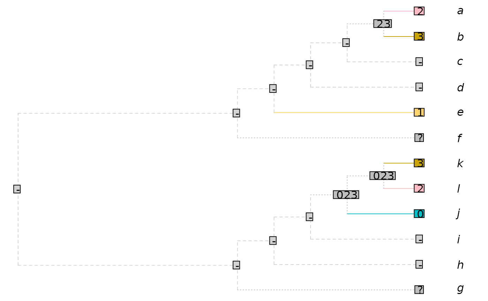
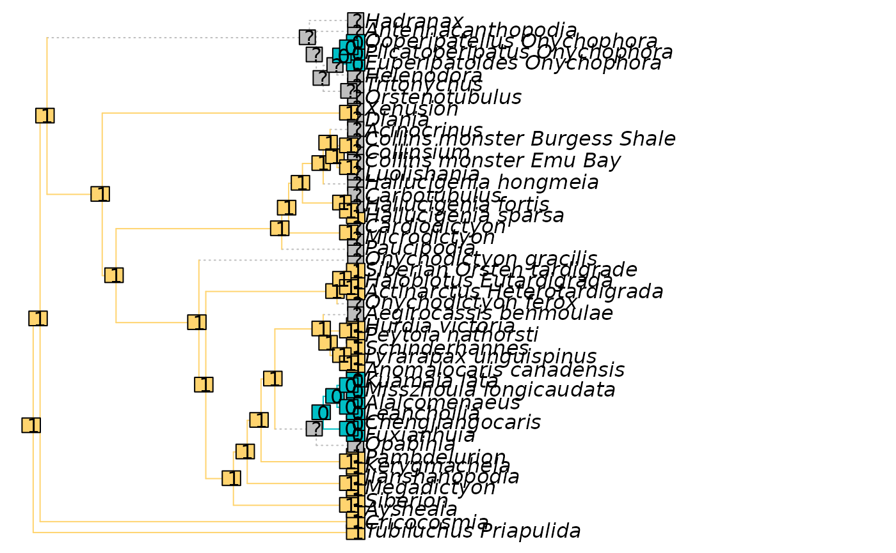

Reconstructs the distribution of a character on a tree topology using the modified Fitch algorithm presented in Brazeau et al. (2019) .
Usage
PlotCharacter(
tree,
dataset,
char = 1L,
updateTips = FALSE,
plot = TRUE,
tokenCol = NULL,
ambigCol = "grey",
inappCol = "lightgrey",
ambigLty = "dotted",
inappLty = "dashed",
plainLty = par("lty"),
tipOffset = 1,
unitEdge = FALSE,
Display = function(tree) tree,
...
)
# S3 method for class 'phylo'
PlotCharacter(
tree,
dataset,
char = 1L,
updateTips = FALSE,
plot = TRUE,
tokenCol = NULL,
ambigCol = "grey",
inappCol = "lightgrey",
ambigLty = "dotted",
inappLty = "dashed",
plainLty = par("lty"),
tipOffset = 1,
unitEdge = FALSE,
Display = function(tree) tree,
...
)
# S3 method for class 'multiPhylo'
PlotCharacter(
tree,
dataset,
char = 1L,
updateTips = FALSE,
plot = TRUE,
tokenCol = NULL,
ambigCol = "grey",
inappCol = "lightgrey",
ambigLty = "dotted",
inappLty = "dashed",
plainLty = par("lty"),
tipOffset = 1,
unitEdge = FALSE,
Display = function(tree) tree,
...
)
# S3 method for class 'list'
PlotCharacter(
tree,
dataset,
char = 1L,
updateTips = FALSE,
plot = TRUE,
tokenCol = NULL,
ambigCol = "grey",
inappCol = "lightgrey",
ambigLty = "dotted",
inappLty = "dashed",
plainLty = par("lty"),
tipOffset = 1,
unitEdge = FALSE,
Display = function(tree) tree,
...
)Arguments
- tree
A bifurcating tree of class
phylo, or a list ormultiPhyloobject containing such trees.- dataset
A phylogenetic data matrix of phangorn class
phyDat, whose names correspond to the labels of any accompanying tree. Perhaps load into R usingReadAsPhyDat(). Additive (ordered) characters can be handled usingDecompose().- char
Index of character to plot.
- updateTips
Logical; if
FALSE, tips will be labelled with their original state indataset.- plot
Logical specifying whether to plot the output.
- tokenCol
Palette specifying colours to associate with each token in turn, in the sequence listed in
attr(dataset, "levels").- ambigCol, ambigLty, inappCol, inappLty, plainLty
Colours and line types to apply to ambiguous, inapplicable and applicable tokens. See the
ltygraphical parameter for details of line styles. OverridestokenCol.- tipOffset
Numeric: how much to offset tips from their labels.
- unitEdge
Logical: Should all edges be plotted with a unit length?
- Display
Function that takes argument
treeand returns a tree of classphylo, formatted as it will be plotted.- ...
Further arguments to pass to
plot.phylo().
Value
PlotCharacter() invisibly returns a matrix in which each row
corresponds to a numbered tip or node of tree, and each column corresponds
to a token; the tokens that might parsimoniously be present at each point
on a tree are denoted with TRUE.
If multiple trees are supplied, the strict consensus of all trees and
reconstructions will be returned; i.e. if a node is reconstructed as $0$
in one tree, and $2$ in another, it will be labelled $(02)$.
References
Brazeau MD, Guillerme T, Smith MR (2019). “An algorithm for morphological phylogenetic analysis with inapplicable data.” Systematic Biology, 68(4), 619–631. doi:10.1093/sysbio/syy083 .
Examples
# Set up plotting area
oPar <- par(mar = rep(0, 4))
tree <- ape::read.tree(text =
"((((((a, b), c), d), e), f), (g, (h, (i, (j, (k, l))))));")
## A character with inapplicable data
dataset <- TreeTools::StringToPhyDat("23--1??--032", tips = tree)
plotted <- PlotCharacter(tree, dataset)

plotted
#> - 0 1 2 3
#> [1,] FALSE FALSE FALSE TRUE FALSE
#> [2,] FALSE FALSE FALSE FALSE TRUE
#> [3,] TRUE FALSE FALSE FALSE FALSE
#> [4,] TRUE FALSE FALSE FALSE FALSE
#> [5,] FALSE FALSE TRUE FALSE FALSE
#> [6,] TRUE TRUE TRUE TRUE TRUE
#> [7,] TRUE TRUE TRUE TRUE TRUE
#> [8,] TRUE FALSE FALSE FALSE FALSE
#> [9,] TRUE FALSE FALSE FALSE FALSE
#> [10,] FALSE TRUE FALSE FALSE FALSE
#> [11,] FALSE FALSE FALSE FALSE TRUE
#> [12,] FALSE FALSE FALSE TRUE FALSE
#> [13,] TRUE FALSE FALSE FALSE FALSE
#> [14,] TRUE FALSE FALSE FALSE FALSE
#> [15,] TRUE FALSE FALSE FALSE FALSE
#> [16,] TRUE FALSE FALSE FALSE FALSE
#> [17,] TRUE FALSE FALSE FALSE FALSE
#> [18,] FALSE FALSE FALSE TRUE TRUE
#> [19,] TRUE FALSE FALSE FALSE FALSE
#> [20,] TRUE FALSE FALSE FALSE FALSE
#> [21,] TRUE FALSE FALSE FALSE FALSE
#> [22,] FALSE TRUE FALSE TRUE TRUE
#> [23,] FALSE TRUE FALSE TRUE TRUE
# Character from a real dataset
data("Lobo", package = "TreeTools")
dataset <- Lobo.phy
tree <- TreeTools::NJTree(dataset)
PlotCharacter(tree, dataset, 14)

par(oPar)